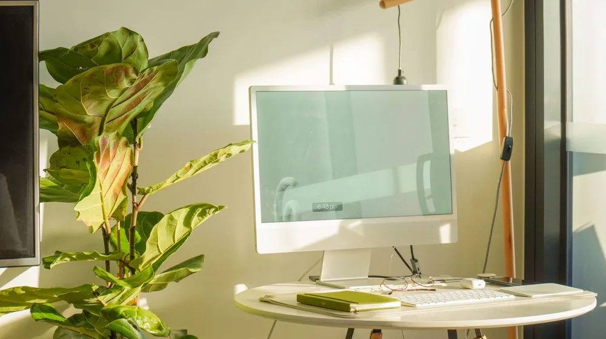

미니멀 라이프 시작하기, 실패 없는 3단계 비우기 법칙
사진: https://kaboompics.com/ / Pexels (무료 이미지, 출처 표기)
집안을 가득 채운 물건들을 보며 답답함을 느낀 적이 있으신가요? 많은 이들이 더 나은 삶을 꿈꾸며 미니멀 라이프(최소한의 물건으로 삶의 질을 높이는 생활 양식)에 도전하지만, 무엇부터 버려야 할지 몰라 중도 포기하곤 합니다. 이 글에서는 무작정 다 버리는 극단적인 비움 대신, 일상에서 바로 실천할 수 있는 체계적인 3단계 정리법과 유용한 기준을 정리해 드립니다.
1. 미니멀 라이프 시작하기 3단계 절차

미니멀 라이프는 한 번에 집 전체를 뒤엎는 행위가 아닙니다. 작은 구역부터 차근차근 영역을 넓혀가는 것이 지속 가능한 비우기의 핵심입니다. 다음의 3단계를 따라 하루 15분씩 시작해 보세요.
- 1단계: 기준 영역 선정 및 분류하기
안 쓰는 물건이 가장 먼저 눈에 띄는 현관이나 화장실, 옷장 한 칸처럼 작은 구역을 정합니다. 해당 구역의 물건을 모두 꺼내 바닥에 펼쳐놓습니다. - 2단계: 사용 빈도에 따른 선별
최근 1년간 한 번도 쓰지 않은 물건은 앞으로도 쓰지 않을 확률이 90% 이상입니다. 아깝다는 감정은 내려놓고 쓰임새에 집중하여 분류합니다. - 3단계: 제자리 지정과 유지 관리
남기기로 결정한 물건들은 각각 명확한 '집(지정 위치)'을 만들어 줍니다. 물건을 쓰고 제자리에 두는 습관만으로도 원래 상태를 오래 유지할 수 있습니다.
2. 물건 정리 기준: 버릴 것과 남길 것 비교
막상 정리를 시작하면 무엇을 남기고 무엇을 비워야 할지 끊임없이 갈등하게 됩니다. 선택의 순간에 가이드라인이 되어줄 정리 기준표를 참고하면 결정을 내리기가 한결 수월해집니다.
3. 초보자가 가장 자주 하는 실수와 주의사항
가장 흔한 실수는 비우기도 전에 '수납함'부터 새로 사는 것입니다. 물건이 줄어들면 수납 가구 자체도 필요 없어집니다. 정리가 끝날 때까지 수납 용품 구매를 미루는 것이 오히려 돈을 아끼는 지름길입니다.
또한, 가족의 동의 없이 타인의 물건을 손대는 행동은 절대 피해야 합니다. 미니멀 라이프는 나 자신의 물건에서 출발해야 가족 갈등을 예방할 수 있습니다. 내 물건이 깔끔하게 정돈된 모습을 먼저 보여주면 가족들도 자연스럽게 비우기에 동참하곤 합니다.
4. 요요 현상 막는 일상 속 '소비 제어' 법칙
아무리 열심히 비워도 새로 사 들이면 도루묵이 됩니다. 이를 방지하기 위해 '하나가 들어오면 하나를 내보낸다'는 원-인 원-아웃(1 In 1 Out) 원칙을 세워보세요. 새로운 셔츠를 사면 낡은 셔츠 하나를 기부하거나 버리는 식입니다.
쇼핑 장바구니에 담아둔 물건은 최소 48시간 동안 결제하지 않고 기다리는 습관도 좋습니다. 시간이 흐른 뒤 다시 보면 충동구매였음을 깨닫고 장바구니를 비우는 경우가 생각보다 많습니다.
5. 미니멀 라이프 실천을 위한 데일리 체크리스트
가벼운 일상을 유지하기 위해 매일 혹은 매주 점검하면 좋은 생활 습관들을 모았습니다. 무리하지 말고 가능한 항목부터 가볍게 실천해 보시기 바랍니다.
- 일주일에 한 번, 지갑 속 영수증과 안 쓰는 포인트 카드 정리하기
- 스마트폰 앱 중 지난 한 달간 사용하지 않은 앱 모두 삭제하기
- 사은품이나 공짜로 주는 물건은 처음부터 거절하는 연습하기
- 메일함에 쌓인 광고성 이메일 수신 거부 및 일괄 삭제하기
- 주변 정리를 돕는 가벼운 수납 정리함을 활용하되, 여유 공간을 20% 항상 남겨두기
미니멀 라이프의 본질은 단순히 물건을 줄이는 것이 아니라, 나에게 진짜 소중한 것에 집중할 수 있는 시간과 공간을 확보하는 데 있습니다. 오늘 방 안의 작은 서랍 한 칸부터 가볍게 비워보시는 것은 어떨까요?
🔗 이 글도 함께 보면 좋아요: 거실 분위기 바꾸는 소반 커피테이블, 실패 없는 연출 팁
관련 추천 상품
이 포스팅은 쿠팡 파트너스 활동의 일환으로, 이에 따른 일정액의 수수료를 제공받습니다.